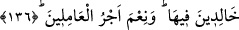

“Bir de onlar” büyük günah olsun, zulüm olsun, “yaptıklarında” mağfiret taleb
ederler; günahlarında “bile bile ısrar etmezler.”
Hz. Peygamber (s.a.): “Günahının bağışlanmasını dileyen biri, işlediği günaha, bir
gün zarfında yetmiş kere de dönse, ısrar etmiş sayılmaz.”[117] Ayrıca, “İstiğfâr edilen
hiçbir günah büyük değil; ısrar edilen hiçbir günah da küçük değildir.”[118]
buyurmuştur.[119]
Küçük bir günahta ısrar edilirse, o artık büyük günah olur. Onlar, günahın çirkin ve
yasak olduğunu; işleyene yapılan tehdidi bile bile onda ısrar etmezler. “Bile bile” kaydı
getirilmiştir, çünkü bunu bilmeyenler, -bu konularla ilgili ilmi tahsil etmede, kendi
kusurları olmadığı zaman- mâzûr görülebilirler.
136. İşte onların mükâfâtı, Rableri tarafından bağışlanma ve altlarından ırmaklar
akan, içinde ebedî kalacakları cennetlerdir. Böyle amel edenlerin mükâfâtı ne
güzeldir!
Bu sıfatları taşıyanların mükâfâtı Rableri tarafından bağışlanma ve altlarından
ırmaklar akan, içinde sürekli kalacakları cennetlerdir. Onlar için tertemiz azıklar,
bitmez tükenmez mükâfatlar; dâimî yemyeşil bahçeler; geçici olmayan zevkler vardır.
“Böyle amel edenlerin ücreti ne güzeldir.” Âyette medhedilen şey bulunmamaktadır.
Amel edenlerin mükâfâtı olarak bunlar, yani cennet ve mağfiret ne güzeldir, demektir.
Cennet ile mağfiret aslında Allah’ın lütfu olarak verilse de, bunların bir iş karşılığı
hak edildiğini gösteren ücret diye bahsedilmesi tâata daha fazla teşvik; mâsiyete
düşmeyi daha çok engellemek maksatlarına ma’tûftur.
Hz. Peygamber (s.a.), Rabbinin şöyle buyurduğunu aktarmaktadır:
“Ey Âdemoğlu, bana duâ edip ümidvâr olduğun müddetçe senden sâdır olan
hatâları bağışlarım.
Ey Âdemoğlu! Bana yeryüzü dolusu hatâ ile gelsen, Bana herhangi bir varlığı şirk
koşmadıkça, ben de sana dünya dolusu mağfiret ile gelirim.
Ey Âdemoğlu! İşlediğin günahlar gökyüzünü dolduracak kadar fazla da olsa
bunların bağışlanmasını dilersen, seni yine bağışlarım.”[120]
Sâbit el-Benânî şöyle diyor: “Bu âyet-i kerîme nâzil olduğunda, -bana ulaşan
bilgilere göre- İblis ağlamıştır.”
Hz. Peygamber (s.a.) şöyle buyurmaktadır: “Hiçbir kul yoktur ki günah işledikten
sonra, güzelce abdest alıp namaz kılsın ve günahının bağışlanmasını istesin de Allah
onu bağışlamış olmasın.”[121]